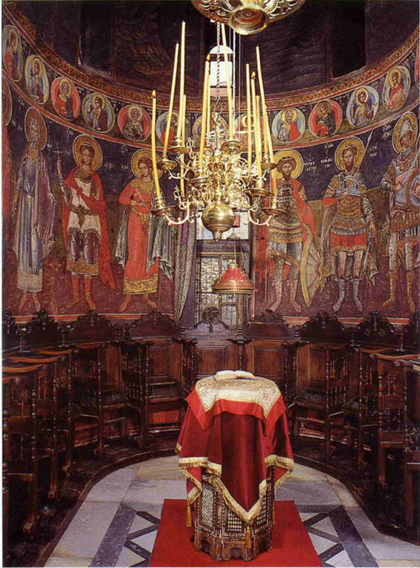

What's Analogion?
Analogion is the place where the psaltai (chanters, cantors) stand in church.Literally it means the bookstand on which the psaltic books are placed.
This is an example of an analogion from Mt Athos
(c) Holy Monastery of Koutloumousiou
